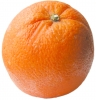

Apelsin
Fakta
En apelsin är ett orangefärgat bär som kommer ifrån apelsinträdet. Apelsinen är ingen naturligt förekommande art utan en hybrid mellan pompelmus och småcitrus . Apelsinen kommer urspungligen från Sydostasien men växer idag i många områden i världen. Färgen orange har fått sitt namn ifrån apelsinen som på franska (och engelska) heter just orange. Brasilien är det land som producerar flest apelsiner. Blodapelsin är en typ av apelsin. Blodapelsiner har en kort säsong och odlas bara på några få platser på jorden, främst Sicilien.
Bild
